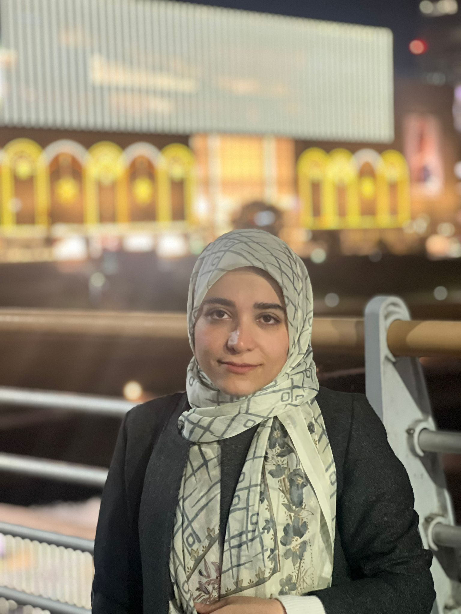

About Me
I am a Machine Learning engineer and researcher with a strong background in
deep learning, data management, NLP, and data engineering.
I completed my MSc in Computer Science at Western University, Canada,
where I worked on improving fairness in deep entity matching under the supervision of
Dr. Mostafa Milani.
I have 3 years of professional working experience as a senior software engineer and data engineer at
Pelypay International and The Home Depot, where I built fraud detection systems,
designed ML pipelines, and optimized large-scale data workflows.
I am passionate about developing responsible and efficient AI systems.
Research Interests
- Data Mining
- Data Management
- Machine Learning
- Deep Learning
- Natural Language Processing
Education
Western University, Canada — MSc in Computer Science (2021–2023)
Amirkabir University of Technology (Tehran Polytechnic), Iran — BSc in Computer Engineering (2014–2019)
- GPA: 16.80/20
- Project: Implementing an object tracking software
- Supervisor: Dr. Ahmad Nickabadi
Publications
-
S. Nilforoushan, Q. Wu, M. Milani.
“Entity matching with AUC-based fairness”.
IEEE Big Data Conference, 2022.
PDF
Research & Work Experience
Pelypay International, Toronto, Canada –Senior Software Engineer (2023–2025)
- Built ML pipelines for fraud detection; reduced fraudulent transactions by 30%.
- Developed a fraud detection system using React, Spring Boot, and REST APIs.
- Optimized SQL queries and improved system security.
The Home Depot, Toronto, Canada – Software Engineer (2022–2023)
- Migrated App Engine system to GCP, improving pipeline speed by 50%.
- Increased project efficiency by 20% using Airflow, Python, and GCP tools.
Western University, London, Canada – Machine Learning Researcher (2021–2022)
- Applied fairness constraints in deep learning entity matching.
- Enhanced Large Language Models using modern NLP techniques.
- Presented 15+ papers in data cleaning, privacy, and ML.
IPM (Institute for Research in Fundamental Sciences), Tehran, Iran – Researcher & Data Analyst (2019–2020)
- Collected and analyzed EyeTracker data related to attention patterns.
- Designed psycho-physics experiments to enhance user attention.
Technical Skills
- Languages: Python, Java, Scala, C++
- ML & NLP Libraries: PyTorch, TensorFlow, Hugging Face, Transformers, LangChain, LLaMA
- Data & Cloud: Airflow, Pandas, GCP, AWS
- Frameworks: Spring Boot, Git
- Databases: MySQL, SQL Server
- OS: Linux, macOS, Windows
Teaching Assistantships
- Advanced Programming (Java), Western University (2021–2022)
- Data Analysis, Western University (2022)
- Database Management Systems, Amirkabir University (2018)
- Computer Architecture, Amirkabir University (2017)
Selected Projects
-
Robotics Grasping Chatbot –
GitHub
-
LLM-based Chatbot (LangChain & LLaMA) –
GitHub
-
Retail Analysis with Walmart Data –
GitHub
-
Loan Data Analysis –
GitHub
-
Twitter Airline Sentiment Analysis –
GitHub
Honours & Awards
- Full MSc Funding, Western University ($50,000), 2021
- Exceptional Talent Award, Amirkabir University, 2015
- Ranked top 0.05% in Iran National Entrance Exam (Math & Physics), 2014